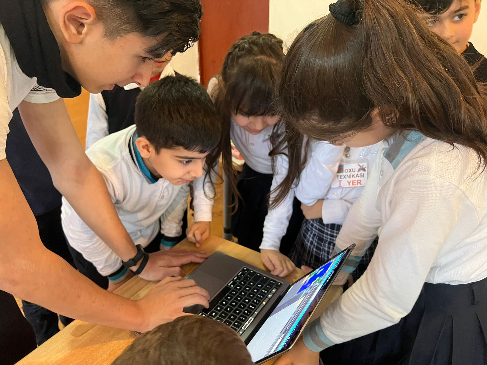
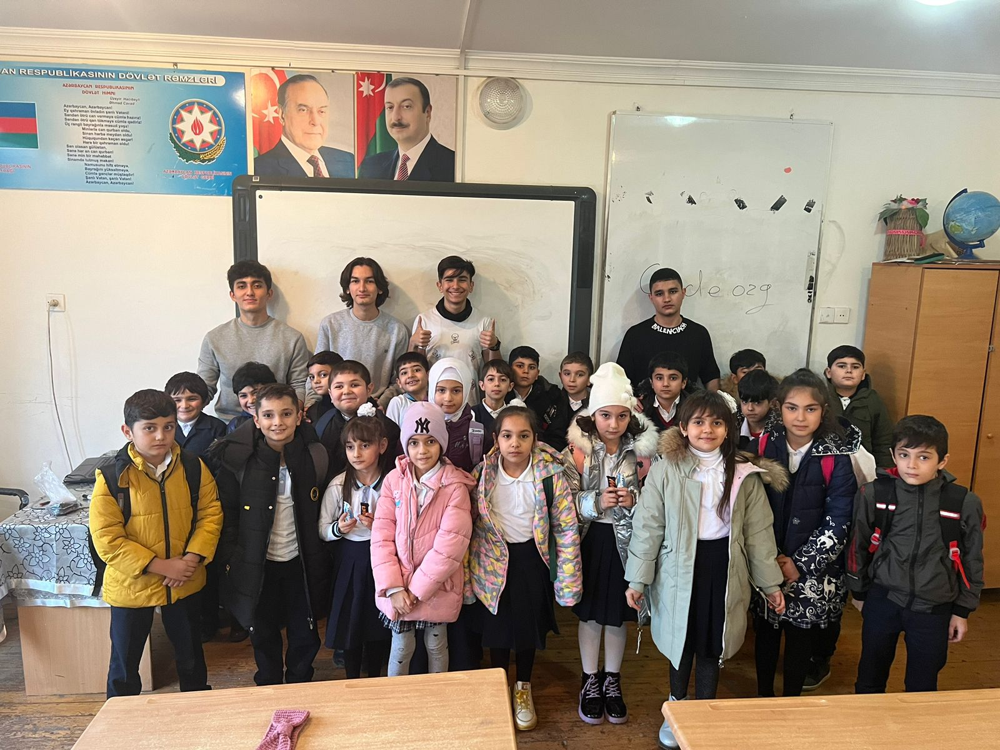

Welcome! This website was mainly made for our "Principles of information system" project, for us ("CREW 404") in order to learn how HTML, CSS and JavaScript work. In our website, we are going to share you about us and our hour of code project in this website! By the way, on the top left you can see our logo, maybe you know from which game it is? Yes! Our logo was inspired from Portal and Portal 2 game, which was developed by "Valve". But why did we associate our logo with "Portal"? The game "Portal" was an inspiring game for us, we all played that game when we were youngsters, and that is why we had an idea to replace our 0 from "404" to a portal itself! The game "Portal" was a logic game, where it required a lot of brainstorming and high IQ. Developing a website from scratch is also kind of a logic, and that is why we decided to have an easter egg from our favorite game. If you want to extra information about designers experience:
Enjoy by exploring!
As Team 45, we visited Baku Middle School 284 and lectured an Hour of Code event to 2nd grade students who are aimed to be inspired by this. Thanks to perfect collaborating of team members and active participation of students enjoyed, we reached our goal. We are sure that even this event will change career path of any student, regardless of their being child.
 